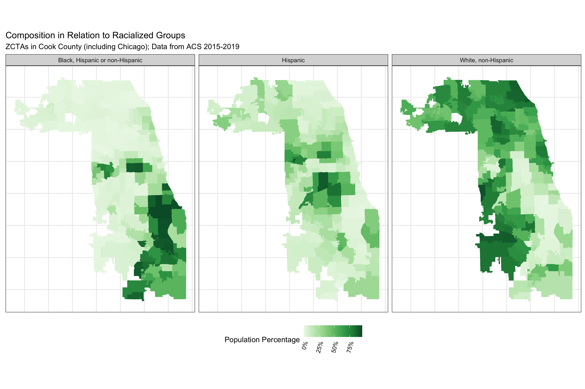
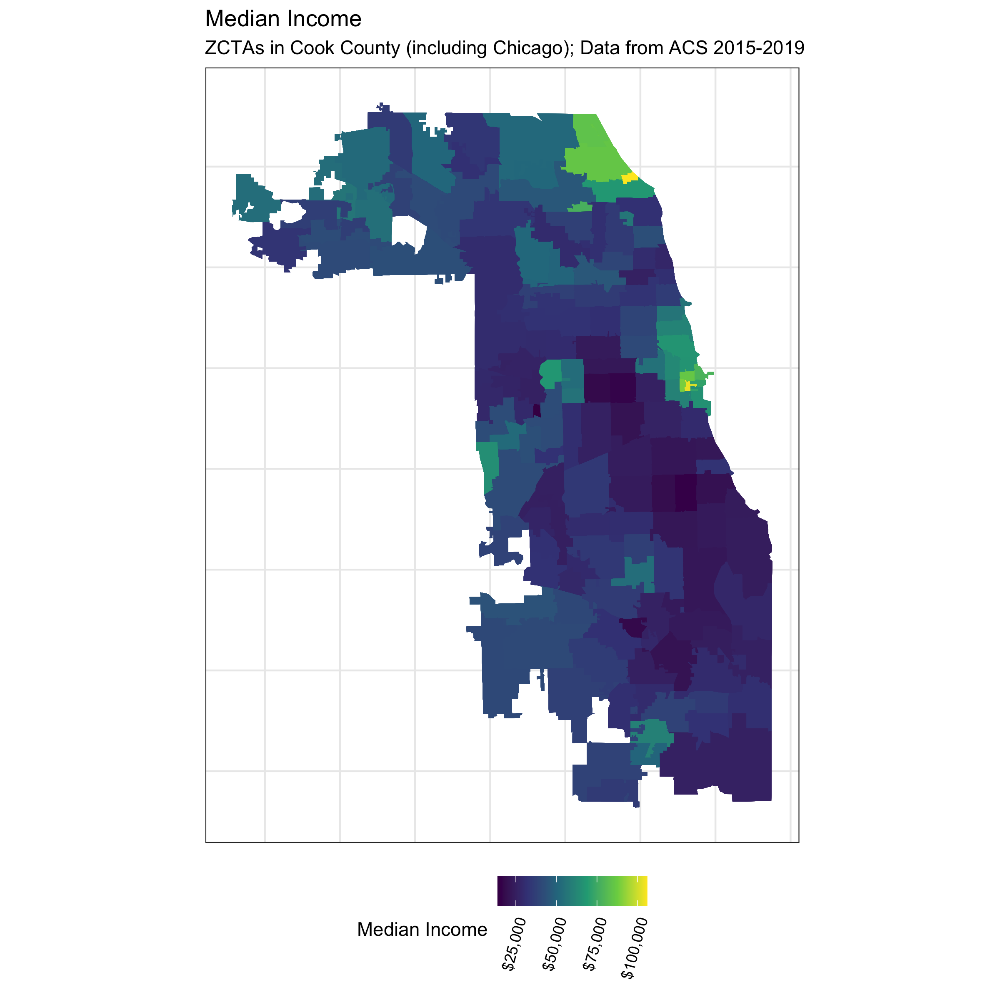
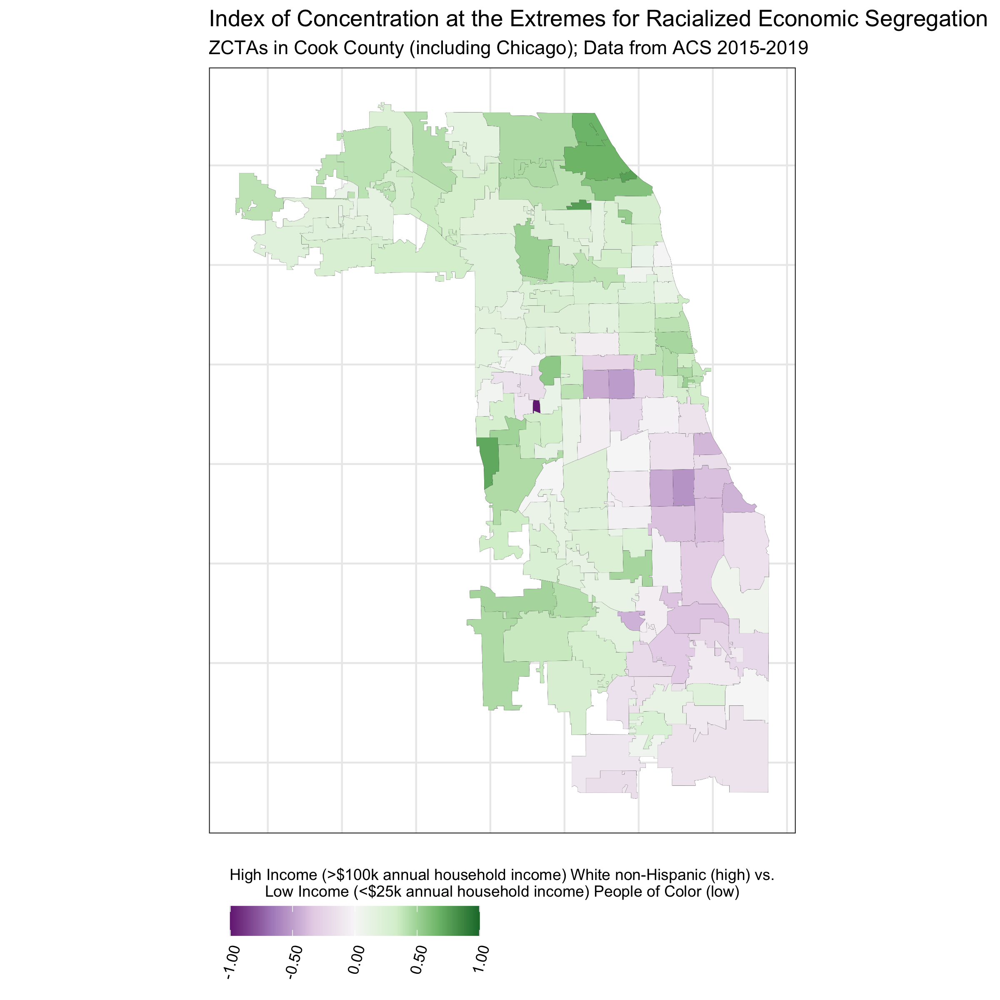

8 Case Study 3: COVID-19 Mortality in Cook County (March 2020 - March 2022)
8.1 Introduction
In this case study, the outcome of interest is COVID-19 mortality in Cook County. The impact of COVID-19 has been marked by inequities by racialized/ethnic group and socioeconomic position. Here we investigate disparities in COVID-19 mortality, with a focus on comparing risks between Black Hispanic and non-Hispanic, White non-Hispanic, and Hispanic populations.
The Cook County Medical Examiner has made a dataset with COVID-19 related deaths publicly available with the following intent:
Cook County Government has created the Medical Examiner COVID-19 Dashboard to provide direct, transparent access to critical information about COVID-19 deaths in the County for public health agencies, medical professionals, first responders, journalists, policymakers and residents. The Medical Examiner’s Office encourages visitors to use this data to explore trends, identify areas of concern and take appropriate action. The data can be utilized to identify communities that are most severely impacted by the virus and can inform proactive public policy.
Read more: https://datacatalog.cookcountyil.gov/stories/s/ttk4-trbu
Data Source: https://datacatalog.cookcountyil.gov/Public-Safety/Medical-Examiner-Case-Archive-COVID-19-Related-Dea/3trz-enys
The death records in this dataset includes individual-level fields for “Race” and “Latino”, from which we obtain social membership in racialized/ethnic groups. The dataset also includes residential Zip Codes, which we can use to link to area-based social measures (ABSMs) from the American Community Survey (ACS) 2015-19. We will explore how membership in racialized/ethnic groups and ABSMs is associated with COVID-19 mortality.
8.2 Motivation, Research Questions, and Learning Objectives
This case study focuses on the following research questions:
What are the differences in COVID-19 mortality rates by racialized group accounting for age?
What are the gradients in overall COVID-19 mortality in relation to ABSMs measuring: racialized group composition, the ICE for racialized economic segregation, percent of population living below the poverty line, percent of people living in crowded housing, and median income;
What are the gradients in COVID-19 mortality by racialized group in relation to the ABSMs
What is the spatial variation in COVID-19 mortality by racialized group?
In today’s case example using these data, we’ll show you how you can use the tidycensus package to download relevant area based population estimates and sociodemographic measures from the ACS.
We’ll show you how we cleaned the data and merged in data from the ACS in the Cleaning the Data section. However, we’re also providing you a cleaned dataset that should allow you to pick up and follow along from the Visualizing Your Data section onwards.
8.3 Approach
To look at overall differences in COVID-19 mortality by racialized group, we will model aggregate mortality rates across Cook County by racialized group
To look at gradients in relation to ABSMs, we will model overall ZCTA-level mortality rates for each ABSM of interest.
To look at gradients in relation to ABSMs by racialized group, we will model ZCTA-level mortality separately for each racialized group and each ABSM.
To explore spatial variation we will use spatial models.
8.4 Dependencies
These are the packages that you will need to run the code in this case example. Once you copy and run the code below to load the dependencies, you can jump ahead to the Visualizing Your Data Section if you want.
# mission critical packages
library(tidycensus)
library(tidyverse)
library(sf)
library(tigris)
library(mapview)
library(INLA)
library(spdep)
# nice to have packages
library(magrittr) # for the %<>% and %$% pipe
library(janitor)
library(purrr)
library(Hmisc)
library(epitools)
library(leaflet)
library(scales)8.5 Cleaning the Data
8.5.1 Denominator Data
Here we will use tidycensus to download relevant variables from the 2015-19 ACS dataset. The complete list of variables can be viewed online here: https://api.census.gov/data/2019/acs/acs5/variables.html. You will need a U.S. Census API key to download the data, which you can obtain from here: https://api.census.gov/data/key_signup.html. The key is for personal use here only, so it has been redacted here.
We will be looking at a range of different ABSMs, and we also require age-stratified populations by racialized group. You can browse the variables to identify which tables contain the variables you need.
It can be helpful to identify patterns in the variable names to efficiently query the Census API. In the code below you will see an approach that does not require us to type out all the variable names. Can you think of more efficient ways to query the API?
# census_api_key("Your API KEY goes here")
# get population sizes from ACS -------------------------------------------
#Get a list of the variable names
acs_vars <- tidycensus::load_variables(2019, dataset = 'acs5')
# the racialized group and age-group stratified population estimates from ACS are
# in the B01001 table.
#
# B01001_001 through _049 are the sex/gender overall population size estimates,
# and B01001A through B01001I are the "race/ethnicity" specific tables. For the
# "race/ethnicity" specific tables the age-groups suffixes range from _001 to _031
#
# in the following three steps, we programmatically construct the population
# size variables that we want to retrieve from the ACS since otherwise there are
# a lot of them to type out.
race_chars <-
c(
white = 'H', # In the 2015-19 ACS data, a suffix of H indicates non-Hispanic White, but be careful because these suffixes may change from year to year!
black = 'B',
hispanic_or_latino = 'I'
)
# for each of H, B, and I, construct B01001*_001 through _031. If you look at the variable list at the link above, you will see that the variable names constructed below correspond to total and age-sex specific population estimates for each racialized/ethnic group.
sex_race_age_vars <-
paste0(rep(paste0('B01001', race_chars, '_0'), each = 31),
stringr::str_pad(
1:31,
width = 2,
side = 'left',
pad = '0'
))
# this adds on the sex/gender overall population estimates (e.g.B01001_001 is the total male population)
sex_race_age_vars %<>% c(.,
paste0(
'B01001_0',
stringr::str_pad(
1:49,
width = 2,
side = 'left',
pad = '0'
)
))
# The API gives us data whose labels are all in one string, with information separated by '!!'. We split the label to make it more useful.
acs_vars %<>%
tidyr::separate(label,
into = c('estimate', 'total', 'gender', 'age', 'subgroup'),
sep = '!!')
# clean label values (remove unnecessary colon characters and leading/trailing spaces)
acs_vars %<>% mutate_at(.vars = vars(estimate, total, gender, age, subgroup),
~ gsub(":", "", .) %>% stringr::str_trim())
# select only what we need
acs_vars %<>% dplyr::select(name, total, gender, age, concept)
# Now that we have the variables names, we use it to get sex, racialized group (incl. hispanic or latino), and age stratified population
# estimates
popsizes <-
tidycensus::get_acs(
geography = 'zip code tabulation area',
state = 'IL',
year = 2019,
geometry = TRUE, # This obtains the geometry / shapes of each zip-code tabulation area (ZCTA)
variables = sex_race_age_vars,
output = 'tidy',
cache_table = T #this will enable quicker loading if we load the data again in the future
)
# join in our variable names
popsizes %<>% left_join(acs_vars, by = c('variable' = 'name'))
popsizes %<>% janitor::clean_names() # clean column names
popsizes %<>% dplyr::select(-total) # remove total column that only contains 'total'
# While we set geometry = T so that we got the geometry data, we don't need this as we clean the data. It makes things slow, so we take out the geometry for use later
zip_geometry <- popsizes %>% dplyr::select(geoid) %>% unique()
# ggplot(zip_geometry) + geom_sf() # zip codes of illinois
# remove geometry before data reshaping
popsizes %<>% sf::st_drop_geometry()
if ('sf' %in% class(popsizes)) {
stop("popsizes data has geometry, this can cause errors in the group_by and summarize steps using dplyr.")
}
# aggregate by sex/gender
popsizes %<>%
group_by(geoid, name, age, concept) %>%
dplyr::summarize(
estimate = sum(estimate),
# here we're using the tidycensus::moe_sum function to create margin of error estimates for
# sums of population size estimates
moe = tidycensus::moe_sum(moe = moe, estimate = estimate)
)Since the Cook County Medical Examiner Case Archive data includes records on deaths where the decedents’ residential ZCTAs are inside as well as outside Cook County, Illinois, we want to restrict our dataset to deaths where their county of residence was in Cook County. An issue is that ZCTAs are not neatly nested within the county borders - often part of a ZCTA can lie outside the county.
How would you work with this issue of ZCTAs crossing county borders? Here we calculated the percentage of an area in a ZCTA that also falls within the Cook County borders, and retained those with 90% overlap (an arbitrary threshold). Would you use a different threshold? We also had to deal with issues of parts of Lake Michigan (bordering Cook County’s east coast) being included in some shapefiles but not others.
Note that the unit of geography for analysis is the US census-defined Zip Code Tabulation Area (ZCTA), which is related to but not identical with the US Postal Service ZIP Code (which is a unit of mail delivery, reflecting postal carrier routes, such that a given spatial area can encompass several ZIP Codes). To create ZCTAs, the US Census assigns each census block the most frequently occurring ZIP Code within the block. For technical information about ZCTAs, see: https://www.census.gov/programs-surveys/geography/guidance/geo-areas/zctas.html. This means that ZCTAs and zip codes may not cover the same area exactly. A discussion of pitfalls to keep in mind when using ZCTAs linked to residential Zip Code can be found in this paper https://www.ncbi.nlm.nih.gov/pmc/articles/PMC1447194/ .
# identify relevant zip codes ---------------------------------------------
# we originally downloaded the county shapefiles using tigris, but
# we found that those contained water area we wanted to remove.
#
# we tried using the tigris::erase_water function but it took a very
# long time to run for us, so we found that the alternative was easier
# to implement: downloading a county shapefile directly from the census
# and using that one which came already with the water areas removed.
#
# We got our county shapefile for Cook county in what follows from here:
# https://www.census.gov/geographies/mapping-files/time-series/geo/carto-boundary-file.html
########## Change to file path where the shape file is downloaded ###########
counties <- read_sf('./data/09-cook-county-covid/cb_2018_us_county_5m/cb_2018_us_county_5m.shp')
# get the map for cook county
cook_county <- counties %>% filter(
# get the 5-digit FIPS or GEOID for Cook County programmatically by filtering
# the tigris::fips_codes dataframe, or if you happen to know it's 17031
# you could code it explicitly instead
GEOID == tigris::fips_codes %>%
filter(county == 'Cook County', state == 'IL') %$%
paste0(state_code, county_code))
# get cook county sf object from tigris that is water inclusive for filtering. Since the ZIP geometry can include bits of water, we want to use the Cook County boundaries that include Lake Michigan. Otherwise some coastal ZIP codes may have less than 90% overlap and get dropped.
IL_counties <- tigris::counties(state = 'IL')
cook_county_incl_water <- IL_counties %>%
filter(
COUNTYFP == {
tigris::fips_codes %>%
filter(state == 'IL', county == 'Cook County') %>%
pull(county_code)
}
)
# Find the zip codes intersecting cook county. In the output of st_intersects, zips that intersect with cook county have length greater than 0. So here we keep Zips with any overlap
zips_with_overlap <- zip_geometry[st_intersects(zip_geometry, cook_county_incl_water) %>%
map_lgl( ~ length(.) > 0),]
# figure showing cook county and all ZCTAs intersecting it
ggplot() +
geom_sf(data = cook_county_incl_water, color = 'cadetblue', fill = 'cadetblue') +
geom_sf(data = zips_with_overlap, color = 'orange', fill = 'white', alpha = .4) +
theme_bw()
# interactive file
leaflet() %>%
addTiles() %>% #Adds the basemap
addPolygons(data = cook_county_incl_water, weight = .5) %>% #Adds the Cook county boundary
addPolygons(data = zips_with_overlap, color = 'orange', weight = 2, label = ~geoid) # Adds Zip boundaries
# calculate each zip code total area
zips_with_overlap$total_area <- st_area(zips_with_overlap)
# calculate the intersection of cook county and each zip code tabulation area
zips_with_overlap_intersection <- st_intersection(zips_with_overlap, cook_county_incl_water) #this returns polygons where county and ZCTA intersect
zips_with_overlap_intersection %<>% dplyr::select(geoid)
# calculate the area of each intersection
zips_with_overlap_intersection$overlapping_area_w_cook_cty <- st_area(zips_with_overlap_intersection)
# drop geometry so we can merge this back in
zips_with_overlap_intersection %<>% sf::st_drop_geometry()
# add in overlap calculation
zips_with_overlap %<>% left_join(
zips_with_overlap_intersection %>% dplyr::select(geoid, overlapping_area_w_cook_cty),
by = c('geoid')
)
# calculate the proportion of area for that zip code within cook county
zips_with_overlap %<>% mutate(
prop_area_overlap = as.numeric(overlapping_area_w_cook_cty / total_area))
# filter for zip codes with 90% land area inside cook county
zips_with_over_90pct_overlap <- zips_with_overlap %>%
filter(prop_area_overlap >= .9)
# Visualize Cook County and ZIPs with over 90 percent overlap
ggplot() +
geom_sf(data = cook_county, aes(color = "Cook County"), fill = 'white') + #Plots Cook county boundary
geom_sf(
data = zips_with_over_90pct_overlap, #plots zip codes
mapping = aes(color = "Zip Code Tabulation Areas"),
size = .5,
alpha = .6 #Sets transparency so we can see both layers
) +
scale_color_manual(
values = c("Cook County" = "#E69F00", "Zip Code Tabulation Areas" = "#56B4E9") #manually set colors
) +
# theme_bw() +
guides(color = guide_legend(override.aes = list(fill = c('white', 'grey95')))) +
scale_x_continuous(breaks = c(-88.3, -88.1, -87.9, -87.7, -87.5)) +
ggtitle("Cook County and Zip Code Tabulation Areas 90% Contained Within")
# save the plot
# ggsave(here("images/09-cook-county-covid/cook_county_and_zip_codes.png"), width = 10, height = 6)Now that we have obtained the ZCTAs that we will keep in the study, we can now focus on these to prepare demographic and denominator data.
# group population sizes together by age groups and racialized group and zip code
zips_with_population_estimates_by_race_ethnicity_and_age <-
popsizes %>%
filter(! is.na(age) & concept != 'SEX BY AGE') %>% # filter for overall population
filter(geoid %in% zips_with_over_90pct_overlap$geoid) %$% #Filter to keep only the zips selected above
left_join(zips_with_over_90pct_overlap, .) #join with the zip dataframe to add the geometry column
# Change names of the Census racialized groups
zips_with_population_estimates_by_race_ethnicity_and_age %<>% mutate(
race_ethnicity = case_when(
concept == "SEX BY AGE (BLACK OR AFRICAN AMERICAN ALONE)" ~ "Black, Hispanic or non-Hispanic",
concept == "SEX BY AGE (HISPANIC OR LATINO)" ~ "Hispanic",
concept == "SEX BY AGE (WHITE ALONE, NOT HISPANIC OR LATINO)" ~ "White, non-Hispanic"
))
# remove totals (across age groups) observations
zips_with_population_estimates_by_race_ethnicity_and_age %<>% filter(! is.na(age))
zips_with_population_estimates_by_race_ethnicity_and_age %<>% filter(! is.na(race_ethnicity))
# aggregate into larger age groups
zips_with_population_estimates_by_race_ethnicity_and_age %<>% mutate(
age_group = case_when(
age %in% c(
"Under 5 years",
"5 to 9 years",
"10 to 14 years",
"15 to 17 years",
"18 and 19 years",
"20 to 24 years"
) ~ "Under 25",
age %in% c(
"25 to 29 years",
"30 to 34 years"
) ~ "25 to 34 years",
age == "35 to 44 years" ~ "35 to 44 years",
age == "45 to 54 years" ~ "45 to 54 years",
age == "55 to 64 years" ~ "55 to 64 years",
age == "65 to 74 years" ~ "65 to 74 years",
age == "75 to 84 years" ~ "75 to 84 years",
age == "85 years and over" ~ "85 years and over"
))
# sum age group population sizes by racialized group
zips_with_population_estimates_by_race_ethnicity_and_age %<>% group_by(geoid, age_group, race_ethnicity) %>%
dplyr::summarize(
estimate = sum(estimate, na.rm=T),
moe = moe_sum(moe, estimate)
)
# check how large the population sizes are by racialized group and age
# in each ZCTA
zips_with_population_estimates_by_race_ethnicity_and_age %>%
ggplot(
aes(x = estimate) #estimate is the column name for the population size
) +
geom_histogram() +
facet_grid(race_ethnicity~age_group) + #creates grid of individual plots for each combination of racialized group and age group
scale_x_log10() + #x axis in log scale since distribution of population counts is skewed
xlab("Population Estimate") +
ggtitle("Population Sizes by Racialized Group and Age Group in ZCTAs") +
theme(axis.text.x = element_text(angle = 75, hjust = 1)) #rotate x-axis labels
# ggsave(here("images/09-cook-county-covid/population_count_histogram.png"), height = 8, width = 10)
# check how many have estimates less than 10
zips_with_population_estimates_by_race_ethnicity_and_age %>%
group_by(estimate < 10) %>% count()8.5.2 Case Data
Now we’re ready to load the case data, and add the population size estimates for each racialized group (White non-Hispanic, Black non-Hispanic, and Hispanic) and age-group by ZIP code.
# read in your data. This has been donwloaded from the Cook County Medical Examiner's office website, as mentioned above. https://datacatalog.cookcountyil.gov/Public-Safety/Medical-Examiner-Case-Archive-COVID-19-Related-Dea/3trz-enys
cook_county_deaths <-
readr::read_csv("./data/09-cook-county-covid/Medical_Examiner_Case_Archive_-_COVID-19_Related_Deaths.csv")
# merge racialized group and age-group specific denominators ----------------
# use janitor::clean_names to standardize column name syntax into snake_case
cook_county_deaths %<>% janitor::clean_names()
# check distribution of deaths if needed
#ggplot(cook_county_deaths, aes(x = age)) + geom_bar()
#ggplot(cook_county_deaths, aes(x = race)) + geom_bar()
#ggplot(cook_county_deaths, aes(x = latino)) + geom_bar() + facet_wrap(~race)
#ggplot(cook_county_deaths, aes(x = latino)) + geom_bar()
# code racialized groups into the following:
# Black (Hispanic or non-Hispanic)
# Hispanic and non-Hispanic
# White non-Hispanic
cook_county_deaths %<>%
mutate(
black = race == 'Black',
white_nh = (! latino) & race == 'White',
hispanic = latino
)
# we restrict our time-period to during March 2020 to March 2022 -- noting the
# information on the dataset stories web page:
#
# https://datacatalog.cookcountyil.gov/stories/s/ttk4-trbu
#
# Effective April 1, 2022, the Cook County Medical Examiner’s Office no longer
# takes jurisdiction over hospital, nursing home or hospice COVID-19 deaths
# unless there is another factor that falls within the Office’s jurisdiction.
#
cook_county_deaths %<>% filter(
lubridate::mdy_hms(date_of_death) >= lubridate::mdy("03/01/2020") & #convert date in character format to a date format (POSIXct). This allows evaluation of conditions such as date greater than x, etc.
lubridate::mdy_hms(date_of_death) <= lubridate::mdy("04/01/2022")
)
# Truncate Zip Codes to 5 Characters
cook_county_deaths %<>% mutate(residence_zip = stringr::str_extract(residence_zip, "^[0-9]{5}"))
# Categorize Age Group
cook_county_deaths %<>% mutate(
age_group = case_when(
age <= 24 ~ "Under 25",
age >= 25 & age <= 35 ~ "25 to 34 years",
age >= 35 & age <= 44 ~ "35 to 44 years",
age >= 45 & age <= 54 ~ "45 to 54 years",
age >= 55 & age <= 64 ~ "55 to 64 years",
age >= 65 & age <= 74 ~ "65 to 74 years",
age >= 75 & age <= 84 ~ "75 to 84 years",
age >= 85 ~ "85 years and over",
TRUE ~ NA_character_
)
)
#Convert to factor so that when plotting age groups are plotted in order
cook_county_deaths$age_group %<>% factor(
levels = c(
"Under 25",
"25 to 34 years",
"30 to 34 years",
"35 to 44 years",
"45 to 54 years",
"55 to 64 years",
"65 to 74 years",
"75 to 84 years",
"85 years and over")
)
# separate out deaths into the racialized group categories we're interested in
#
# note that these do have overlap: since the ACS variables do not include
# age tables for the Black non-Hispanic group, we are using the Black
# Hispanic or non-Hispanic population by age tables, and so there is overlap
# between them and the Hispanic group counts.
deaths_by_race_ethnicity_group <-
list(
black = cook_county_deaths %>% filter(black),
hispanic = cook_county_deaths %>% filter(hispanic),
white_nh = cook_county_deaths %>% filter(white_nh)
)
# Assign labels for the racialized groups
race_ethnicity_groups <- c(
"Black, Hispanic or non-Hispanic",
"Hispanic",
"White, non-Hispanic"
)
# for each racialized group, tabulate the number of deaths by age group and
# residence zip code.
#
# here, purrr::map is applying a function which does that tabulation to each of
# the data frames in the deaths_by_race_ethnicity_group list
deaths_by_race_ethnicity_group <-
purrr::map(1:3, function(i) {
group_by(deaths_by_race_ethnicity_group[[i]], residence_zip, age_group) %>%
count(name = 'deaths') %>%
mutate(race_ethnicity = race_ethnicity_groups[[i]])
})
# bind the tables for each of the racialized groups together
deaths_by_race_ethnicity_group %<>% bind_rows()
# check how many of the deaths proportionally were NA
ggplot(deaths_by_race_ethnicity_group, aes(x = age_group, y = deaths)) +
geom_col() +
facet_wrap(~race_ethnicity) +
ylab("Count of Deaths") +
theme(axis.text.x = element_text(angle = 75, hjust = 1))
# remove missing age, missing deaths in racialized groups
deaths_by_race_ethnicity_group %<>% filter(! is.na(age_group))
deaths_by_race_ethnicity_group %<>% filter(! is.na(race_ethnicity))
# check distribution of deaths by age group
deaths_by_race_ethnicity_group %>%
group_by(age_group) %>%
count()
# check distribution of deaths by racial/ethnic group
deaths_by_race_ethnicity_group %>%
group_by(race_ethnicity) %>%
count()
# merge the denominators and deaths together
df <-
zips_with_population_estimates_by_race_ethnicity_and_age %>% left_join(
deaths_by_race_ethnicity_group,
by = c('geoid' = 'residence_zip', 'age_group' = 'age_group', 'race_ethnicity' = 'race_ethnicity'))
# make age_group a factor variable
df$age_group %<>% factor(
levels = c(
'Under 25',
'25 to 34 years',
'35 to 44 years',
'45 to 54 years',
'55 to 64 years',
'65 to 74 years',
'75 to 84 years',
'85 years and over'
)
)
# add person-time
observation_time_in_years <- as.integer(lubridate::mdy("04-01-2022") - lubridate::mdy("03-01-2020")) / 365
df %<>% mutate(person_time = estimate * observation_time_in_years)
df %<>% mutate(deaths = ifelse(is.na(deaths), 0, deaths))
df %<>% mutate(mortality_per100k_py = deaths / person_time * 1e5)
df %>%
group_by(age_group, race_ethnicity) %>%
dplyr::summarize(deaths = sum(deaths)) %>%
ggplot(aes(x = age_group, y = deaths)) +
geom_col() +
facet_wrap(~race_ethnicity) +
xlab("Age Group") +
ylab("Count of Deaths") +
theme(axis.text.x = element_text(angle = 75, hjust = 1)) +
ggtitle("Age Distribution of COVID-19 Deaths in Cook County, IL")
# ggsave(here("images/09-cook-county-covid/age_distribution_deaths.png"), width = 8, height = 6)We can now add ABSMs that we are interested in to the data. We’ll add the Index of Concentration at the Extremes for Racialized Economic Segregation, the proportion of the population under the poverty line, and the median income in each ZCTA.
# add area based socioeconomic measures ----------------------------------
# get zip code rates for
# - poverty
# - ICEraceinc
# - median income
# We create a data dictionary for ABSMS. The first column indicates the total variable code, the second the variable name, and the third the description.
absms_dictionary <- tibble::tribble(
~var, ~varname, ~description,
# total population
"B01001_001", "total_popsize", "total population estimate",
# racial composition
'B01003_001', "race_ethnicity_total", "race_ethnicity_total",
# ICEraceinc
"B19001_001", 'hhinc_total', "total population for household income estimates",
"B19001A_002", 'hhinc_w_1', "white n.h. pop with household income <$10k",
"B19001A_003", 'hhinc_w_2', "white n.h. pop with household income $10k-14 999k",
"B19001A_004", 'hhinc_w_3', "white n.h. pop with household income $15k-19 999k",
"B19001A_005", 'hhinc_w_4', "white n.h. pop with household income $20k-24 999k",
"B19001A_014", 'hhinc_w_5', "white n.h. pop with household income $100 000 to $124 999",
"B19001A_015", 'hhinc_w_6', "white n.h. pop with household income $125k-149 999k",
"B19001A_016", 'hhinc_w_7', "white n.h. pop with household income $150k-199 999k",
"B19001A_017", 'hhinc_w_8', "white n.h. pop with household income $196k+",
"B19001_002", 'hhinc_total_1', "total pop with household income <$10k",
"B19001_003", 'hhinc_total_2', "total pop with household income $10k-14 999k",
"B19001_004", 'hhinc_total_3', "total pop with household income $15k-19 999k",
"B19001_005", 'hhinc_total_4', "total pop with household income $20k-24 999k",
# poverty
"B05010_002", 'in_poverty', "population with household income < poverty line",
"B05010_001", 'total_pop_for_poverty_estimates', "total population for poverty estimates",
# median income
"B06011_001", 'median_income', "median income estimate for total population",
# crowded housing
"B25014_005", 'owner_occupied_crowding1', 'owner occupied, 1 to 1.5 per room',
"B25014_006", 'owner_occupied_crowding2', 'owner occupied, 1.51 to 2 per room',
"B25014_007", 'owner_occupied_crowding3', 'owner occupied, 2.01 or more per room',
"B25014_011", 'renter_occupied_crowding1', 'owner occupied, 1 to 1.5 per room',
"B25014_012", 'renter_occupied_crowding2', 'owner occupied, 1.51 to 2 per room',
"B25014_013", 'renter_occupied_crowding3', 'owner occupied, 2.01 or more per room',
"B25014_001", 'crowding_total', 'total for crowding (occupants per room)',
"B01001I_001", 'total_hispanic', 'total hispanic population estimate',
"B01001B_001", 'total_black', 'total black, hispanic or non-hispanic estimate',
"B01001H_001", 'total_white_nh', 'total white, non-hispanic population estimate'
)
# We create a function which takes as a argument a vector of zip codes, and queries the Census API using those to obtain our ABSM variables for those ZCTAs, and then calculates the ABSMs of interest.
get_absms <- function(zip_codes) {
absms <- tidycensus::get_acs(
year = 2019,
geography = 'zcta',
state = 'IL',
zcta = zip_codes,
variables = absms_dictionary$var, #Get the variables indicated in the data dictionary.
geometry = FALSE # We already have the geometry so we don't need that.
)
# pivot wider so that each row corresponds to a ZCTA
absms %<>% dplyr::select(-moe) %>%
tidyr::pivot_wider(names_from = variable, values_from = estimate)
# Change the new column names to reflect variables names from the dictionary
rename_vars <- setNames(absms_dictionary$var, absms_dictionary$varname)
absms <- absms %>% rename(!!rename_vars)
absms %<>%
mutate(
# we calculate the people of color low income counts as the overall
# low income counts minus the white non-hispanic low income counts
people_of_color_low_income =
(hhinc_total_1 + hhinc_total_2 + hhinc_total_3 + hhinc_total_4) -
(hhinc_w_1 + hhinc_w_2 + hhinc_w_3 + hhinc_w_4),
# sum up the white non-hispanic high income counts
white_non_hispanic_high_income =
(hhinc_w_5 + hhinc_w_6 + hhinc_w_7 + hhinc_w_8),
# calculate the index of concentration at the extremes for racialized
# economic segregation (high income white non-hispanic vs. low income
# people of color)
ICEraceinc =
(white_non_hispanic_high_income - people_of_color_low_income) /
hhinc_total,
prop_in_poverty = in_poverty / total_pop_for_poverty_estimates,
crowding = (owner_occupied_crowding1 + owner_occupied_crowding2 + owner_occupied_crowding3 +
renter_occupied_crowding1 + renter_occupied_crowding2 + renter_occupied_crowding3) / crowding_total,
prop_black = total_black / total_popsize,
prop_hispanic = total_hispanic / total_popsize,
prop_white_nh = total_white_nh / total_popsize
) %>%
dplyr::select(GEOID, ICEraceinc, prop_in_poverty, median_income, crowding, prop_black, prop_hispanic, prop_white_nh)
return(absms)
}
absms <- get_absms(unique(df$geoid))
# merge in absm data to outcome data
df %<>% left_join(absms, by = c('geoid' = 'GEOID'))
# get cutpoints for ICEraceinc in illinois --------------------------------
# we're doing this because we want our cutpoints to be in reference to the
# state distribution for the ICEraceinc variable; other cutpoints can be used,
# but it's important to be transparent about what cutpoints are used and consider
# how the choice of cutpoints may affect the analysis.
#
illinois_absms <-
tidycensus::get_acs(
year = 2019,
geography = 'zcta',
state = 'IL', # Getting for all of IL
variables = absms_dictionary$var,
geometry = FALSE
) %>%
dplyr::select(-moe) %>%
tidyr::pivot_wider(names_from = variable, values_from = estimate)
rename_vars <- setNames(absms_dictionary$var, absms_dictionary$varname)
illinois_absms %<>% rename(!!rename_vars)
illinois_absms %<>%
mutate(
# we calculate the people of color low income counts as the overall
# low income counts minus the white non-hispanic low income counts
people_of_color_low_income =
(hhinc_total_1 + hhinc_total_2 + hhinc_total_3 + hhinc_total_4) -
(hhinc_w_1 + hhinc_w_2 + hhinc_w_3 + hhinc_w_4),
# sum up the white non-hispanic high income counts
white_non_hispanic_high_income =
(hhinc_w_5 + hhinc_w_6 + hhinc_w_7 + hhinc_w_8),
# calculate the index of concentration at the extremes for racialized
# economic segregation (high income white non-hispanic vs. low income
# people of color)
ICEraceinc =
(white_non_hispanic_high_income - people_of_color_low_income) /
hhinc_total,
# we don't need poverty here since we're going to use pre-specified cutpoints
# of 0-5%, 5-10%, 10-20% and 20%+
# calculate crowding
crowding = (owner_occupied_crowding1 + owner_occupied_crowding2 + owner_occupied_crowding3 +
renter_occupied_crowding1 + renter_occupied_crowding2 + renter_occupied_crowding3) / crowding_total,
# racial/ethnic composition variables
prop_black = total_black / total_popsize,
prop_hispanic = total_hispanic / total_popsize,
prop_white_nh = total_white_nh / total_popsize
)
# Using the state-wide distribution of ABSMs at the ZCTA-level, we select cutpoints for quantiles.
illinois_ICEraceinc_cutpoints <-
Hmisc::wtd.quantile(illinois_absms$ICEraceinc, #Weighted quantile of ICE
illinois_absms$total_popsize, #Weights proportional to population size
seq(0, 1, .2), # Cutpoints at 0, 0.2, 0.4, 0.8, 1
na.rm = T)
illinois_ICEraceinc_cutpoints <-
Hmisc::wtd.quantile(illinois_absms$ICEraceinc,
illinois_absms$total_popsize,
seq(0, 1, .2),
na.rm = T)
illinois_median_income_cutpoints <-
Hmisc::wtd.quantile(illinois_absms$median_income,
illinois_absms$total_popsize,
seq(0, 1, .2),
na.rm = T)
illinois_crowding_cutpoints <-
Hmisc::wtd.quantile(illinois_absms$crowding,
illinois_absms$total_popsize,
seq(0, 1, .2),
na.rm = T)
illinois_prop_hispanic_cutpoints <-
Hmisc::wtd.quantile(illinois_absms$prop_hispanic,
illinois_absms$total_popsize,
seq(0, 1, .2),
na.rm = T)
illinois_prop_black_cutpoints <-
Hmisc::wtd.quantile(illinois_absms$prop_black,
illinois_absms$total_popsize,
seq(0, 1, .2),
na.rm = T)
illinois_prop_white_nh_cutpoints <-
Hmisc::wtd.quantile(illinois_absms$prop_white_nh,
illinois_absms$total_popsize,
seq(0, 1, .2),
na.rm = T)
# create cutpoint-leveled version of key ABSM variables
df$ICEraceinc_cut <- df$ICEraceinc %>% cut(., illinois_ICEraceinc_cutpoints, include.lowest=TRUE)
df$median_income_cut <- df$median_income %>% cut(., illinois_median_income_cutpoints, include.lowest=TRUE)
df$prop_in_poverty_cut <- df$prop_in_poverty %>% cut(., c(0, .05, .1, .2, 1), include.lowest=TRUE)
df$crowding_cut <- df$crowding %>% cut(., illinois_crowding_cutpoints, include.lowest=TRUE)
df$prop_black_cut <- df$prop_black %>% cut(., illinois_prop_black_cutpoints, include.lowest=TRUE)
df$prop_hispanic_cut <- df$prop_hispanic %>% cut(., illinois_prop_hispanic_cutpoints, include.lowest=TRUE)
df$prop_white_nh_cut <- df$prop_white_nh %>% cut(., illinois_prop_white_nh_cutpoints, include.lowest=TRUE)We have added discretized (cut, i.e. categorical) versions of the different ABSMs. This is because this helps to allow the model flexibility to fit nonlinear responses with increasing levels in these covariates. Alternative approaches could involve fitting the models with smoothing splines on these variables instead, but we aren’t showing that here today. We used Illinois-wide distribution of ABSMs at the ZCTA level to create quantiles for all variables except poverty. For poverty, we use pre-specified cutpoints.
Here we set the cutpoints for the continuous ABSMs based on the state-wide distribution of ZCTAs. How might this affect our interpretation? How might your research question and context affect how you decide what the ABSM cutpoints are?
How might the selection of cutpoints affect your visualizations? How might your cutpoints change depending on what you want to communicate through the map?
We have a few remaining necessary cleaning steps to perform before we’re ready to model these data.
We have to make sure our factor variables have appropriate reference levels set. Typically we set the reference level as the most privileged group so that we can frame the results as “the _____ group has X times the mortality rate of the reference group.”
# prepare data for modeling ----------------------------------------------
# remove infinite or NA mortality rates since they will cause errors in trying
# to fit the models
df_prepped <- df %>% filter(
is.finite(mortality_per100k_py) &
! is.na(mortality_per100k_py))
# ungroup
df_prepped %<>% ungroup()
# make the most privileged the reference category
df_prepped %<>% mutate(
race_ethnicity = forcats::fct_relevel(factor(race_ethnicity), "White, non-Hispanic"),
age_group = age_group,
ICEraceinc_cut = forcats::fct_rev(ICEraceinc_cut),
median_income_cut = forcats::fct_rev(median_income_cut)
)
# rename the estimate variable to 'population_estimate' to be more clear
df_prepped %<>% rename(population_estimate = estimate)
# save data
# saveRDS(df_prepped, here("data/09-cook-county-covid/cook_county_mortality_cleaned.rds"))8.6 Visualizing Your Data
If you want to start by using the clean dataset you can start from this point on. Now that we have a clean dataset, we can create some exploratory visualizations. In the code chunk above we do some exploratory visualizations of the data. The first series of maps show the crude mortality rates by ZCTA, racialized group and Age Group. To see a larger version of this or any other image on the online version of the book right click and select open image in new tab.
#change this to point to where your downloaded file is
df <- readRDS("./data/09-cook-county-covid/cook_county_mortality_cleaned.rds")
#Read in the county boundary shapefile to plot maps
counties <- read_sf('./data/09-cook-county-covid/cb_2018_us_county_5m/cb_2018_us_county_5m.shp')
# get the map for cook county
cook_county <- counties %>% filter(
# get the 5-digit FIPS or GEOID for Cook County programmatically by filtering
# the tigris::fips_codes dataframe, or if you happen to know it's 17031
# you could code it explicitly instead
GEOID == tigris::fips_codes %>%
filter(county == 'Cook County', state == 'IL') %$%
paste0(state_code, county_code))
# let's start by mapping the crude mortality rates in each racialized group and
# age strata
df %<>% mutate(deaths = ifelse(is.na(deaths), 0, deaths)) # Convert missing cells to 0
df %<>% mutate(mortality_per100k_py = deaths / person_time * 1e5) # Calculate mortality rate per 100,000 person years
# plot raw mortality rates
df %>%
ggplot(aes(fill = mortality_per100k_py)) +
geom_sf(data = cook_county, fill = 'dimgrey') +
geom_sf(size = 0) +
facet_grid(forcats::fct_rev(race_ethnicity)~age_group) + # Create maps of mortality rates by age-group and racialized/ethnic groups
scale_fill_distiller(palette = 'Reds',
trans = scales::pseudo_log_trans(sigma = 100), #log transform since distribution is skewed
direction = 1, #Higher is darker
labels = scales::comma_format(),
na.value = 'dimgrey', #NAs as grey
breaks = c(0, 1000, 10000, 80000)) +
scale_x_continuous(breaks = c( -88.1, -87.7)) +
theme_bw() +
theme(legend.position = 'bottom',
panel.grid = element_blank(),
axis.text.x = element_blank(),
axis.text.y = element_blank(),
axis.ticks.x = element_blank(),
axis.ticks.y = element_blank(),
legend.text = element_text(angle = 75, hjust=1)
) +
labs(fill = 'COVID-19 Mortality per 100,000 person years') +
ggtitle("Crude COVID-19 Mortality Rates by ZCTA, Racialized Group and Age Group",
subtitle = "March 2020 - March 2022")
# ggsave(here("images/09-cook-county-covid/raw_rates_by_zcta.png"), width = 14, height = 8)
# plot population sizes
df %>% ggplot(aes(fill = population_estimate)) +
geom_sf(data = cook_county, fill = 'dimgrey') +
geom_sf(size = 0) +
facet_grid(forcats::fct_rev(race_ethnicity)~age_group) +
scale_fill_distiller(palette = 'Greens', trans = scales::pseudo_log_trans(sigma = 100), direction = 1,
labels = scales::comma_format(), na.value = 'dimgrey',
limits = c(0, NA),
breaks = c(0, 1000, 10000, 30000)) +
scale_x_continuous(breaks = c( -88.1, -87.7)) +
theme_bw() +
theme(legend.position = 'bottom',
panel.grid = element_blank(),
axis.text.x = element_blank(),
axis.text.y = element_blank(),
axis.ticks.x = element_blank(),
axis.ticks.y = element_blank(),
legend.text = element_text(angle = 75, hjust=1)
) +
labs(fill = 'Population Estimate') +
ggtitle("Population Size by ZCTA, Racialized Group and Age Group",
subtitle = "Data from ACS 2015-2019")
# ggsave("./images/09-cook-county-covid/population_size_by_zcta.png", width = 14, height = 8)
#Plot mortality rates
df %>% ggplot(aes(x = mortality_per100k_py, fill = race_ethnicity)) +
geom_histogram(alpha = .8, position = 'identity') +
facet_grid(forcats::fct_rev(race_ethnicity) ~ age_group,
scales = 'free') +
scale_x_continuous(
trans = scales::pseudo_log_trans(sigma = 10),
labels = scales::comma_format(),
breaks = c(0, 100, 1000, 5e4)
) +
xlab("Mortality Rate per 100,000 Person Years") +
ylab("Count") +
labs(fill = 'Racialized Groups') +
ggtitle("Histogram of Mortality Rates by ZCTA, Age Group and Racialized Group",
subtitle = "March 2020 - March 2022") +
theme(legend.position = 'bottom')
# ggsave(here("images/09-cook-county-covid/raw_rates_histogram.png"), width = 16, height = 8)
df %>%
ggplot(
aes(x = population_estimate,
y = mortality_per100k_py,
color = race_ethnicity)) +
geom_point(alpha = .8) +
facet_grid( forcats::fct_rev(race_ethnicity) ~ age_group) +
scale_y_continuous(
trans = scales::pseudo_log_trans(sigma = 10),
labels = scales::comma_format(),
breaks = c(0, 100, 1000, 5e4)
) +
scale_x_continuous(
trans = scales::log_trans(),
labels = scales::comma_format()
) +
ylab("Mortality Rate per 100,000 Person Years") +
xlab("Population Size") +
theme(legend.position = 'bottom') +
labs(fill = 'Racialized Groups') +
ggtitle("Population Size and Mortality Rates by ZCTA, Age Group and Racialized Group")
# ggsave(here("images/09-cook-county-covid/raw_rates_scatter.png"), width = 16, height = 8)You can see that there are a number of zero-counts, and that rates are noisier when population sizes are smaller.
The figure above illustrates that there is a lot more variability of mortality rates at the ZCTA-level when the population count is small. Thus we need to be careful when interpreting extreme values obtained in small areas.
A map of crude rates of small areas with low person-time at risk may be misleading. It may identify some areas as having extreme rates, but this may be just due to chance and low population at risk.
# in the following visualizations the motivating principle behind the direction of the
# color palette is to show (for sequential palettes) higher density with darker colors;
# for the ICEraceinc variable a divergent color palette is used to draw attention to the
# extreme ends of the scale
# visualize the proportional racial/ethnic breakdown
df %>% dplyr::select(geoid, prop_black, prop_white_nh, prop_hispanic) %>%
tidyr::pivot_longer(
cols = c(prop_black, prop_white_nh, prop_hispanic),
names_to = "race_ethnicity",
values_to = 'proportion'
) %>%
mutate(
race_ethnicity = recode(race_ethnicity,
prop_white_nh = 'White, non-Hispanic',
prop_black = 'Black, Hispanic or non-Hispanic',
prop_hispanic = 'Hispanic'
)
) %>%
ggplot(aes(fill = proportion)) +
geom_sf(size = 0) +
facet_grid(~race_ethnicity) +
scale_fill_distiller(
palette = "Greens",
direction = 1,
labels = scales::percent_format()
) +
theme_bw() +
labs(fill = "Population Percentage") +
ggtitle("Composition in Relation to Racialized Groups",
subtitle = "ZCTAs in Cook County (including Chicago); Data from ACS 2015-2019") +
theme(legend.position = 'bottom',
legend.text = element_text(angle = 75, hjust=1),
axis.text.x = element_blank(),
axis.text.y = element_blank(),
axis.ticks.x = element_blank(),
axis.ticks.y = element_blank()
)
# ggsave("./images/09-cook-county-covid/racial_ethnic_composition.png", width = 12, height = 8)
# visualize median income
df %>%
ggplot(aes(fill = median_income)) +
geom_sf(size = 0) +
scale_fill_viridis_c(direction = 1,
labels = scales::dollar_format()) +
theme_bw() +
labs(fill = 'Median Income') +
theme(legend.position = 'bottom',
legend.text = element_text(angle = 75, hjust=1),
axis.text.x = element_blank(),
axis.text.y = element_blank(),
axis.ticks.x = element_blank(),
axis.ticks.y = element_blank()
) +
ggtitle("Median Income",
subtitle = "ZCTAs in Cook County (including Chicago); Data from ACS 2015-2019")
# ggsave("./images/09-cook-county-covid/median_income.png", width = 8, height = 8)
# visualize ICEraceinc
df %>%
ggplot(aes(fill = ICEraceinc)) +
geom_sf(size = 0.01) +
scale_fill_distiller(palette = 'PRGn', direction = 1, limits = c(-1,1),
labels = scales::number_format(accuracy = .01)) +
theme_bw() +
labs(fill = paste0("High Income (>$100k annual household income) White non-Hispanic (high) vs.\n",
"Low Income (<$25k annual household income) People of Color (low)")) +
ggtitle("Index of Concentration at the Extremes for Racialized Economic Segregation",
"ZCTAs in Cook County (including Chicago); Data from ACS 2015-2019") +
guides(fill = guide_colourbar(
title.position = "top",
title.hjust = 0.5,
barwidth = 10
))+
theme(
legend.position = 'bottom',
legend.title = element_text(size = 9),
legend.text = element_text(angle = 75, hjust = 1),
axis.text.x = element_blank(),
axis.text.y = element_blank(),
axis.ticks.x = element_blank(),
axis.ticks.y = element_blank()
)
# ggsave("./images/09-cook-county-covid/ICEraceinc.png", width = 8, height = 8)
# visualize crowding
df %>%
ggplot(aes(fill = crowding)) +
geom_sf(size = 0) +
theme_bw() +
scale_fill_viridis_c(direction = 1,
labels = scales::percent_format()) +
labs(fill = "% Household Crowding") +
ggtitle("Household Crowding",
"ZCTAs in Cook County (including Chicago); Data from ACS 2015-2019") +
theme(
legend.position = 'bottom',
legend.title = element_text(size = 9),
legend.text = element_text(angle = 75, hjust = 1),
axis.text.x = element_blank(),
axis.text.y = element_blank(),
axis.ticks.x = element_blank(),
axis.ticks.y = element_blank()
)
# ggsave("./images/09-cook-county-covid/crowding.png", width = 8, height = 8)
# visualize poverty
df %>%
ggplot(aes(fill = prop_in_poverty)) +
geom_sf(size = 0) +
scale_fill_distiller(palette = 'Purples', direction = 1, limits = c(0,NA),
labels = scales::percent_format()) +
theme_bw() +
labs(fill = 'Poverty Level') +
ggtitle("Poverty Level",
subtitle = "ZCTAs in Cook County (including Chicago); Data from ACS 2015-2019") +
theme(legend.position = 'bottom',
legend.text = element_text(angle = 75, hjust=1),
axis.text.x = element_blank(),
axis.text.y = element_blank(),
axis.ticks.x = element_blank(),
axis.ticks.y = element_blank()
)
# ggsave("./images/09-cook-county-covid/poverty.png", width = 8, height = 8)The code above produces a series of maps that visualize the different ABSMs we will use in this analysis. Note that Chicago is situated in Cook County. 
In contrast to the other ABSMs, the Index of Concentration at the Extremes (ICE) highlights racialized economic segregation (i.e., race/ethnicity + income). It measures the extent to which an area’s population is concentrated into extremes of deprivation and privilege. It is scaled from -1 to 1: a value of -1 means that 100% of the population is concentrated in the most deprived group (in this analysis, conceptualized as the population of color in low-income households), and a value of 1 means that 100% of the population is concentrated into the most privileged group (in this analysis, conceptualized as the White non-Hispanic population in high-income households).
The maps above utilize various color scales. How do you think this can affect communication through maps? Do you have a preference? When might you use a diverging versus continuous color scale? Sometimes in can also be useful to plot an interactive map, shown below.
We can utilize the mapview package to plot interactive graphs.
# launch an interactive map to view Cook County ICEraceinc by zip code
# mapview::mapview(df, zcol = "ICEraceinc")8.7 Analyzing the data
8.7.1 Differences in COVID-19 mortality rates by racialized group
First, we can take a look at the COVID-19 mortality rates by racialized group in aggregate. Because we are aggregating up to the County level, we are not looking at gradients by ABSMs.
#Since we are not taking into account ABSMs in this first analysis, aggregate the data and visualize
crude_mortality <- df %>% st_drop_geometry() %>% #dplyr works faster if we drop the geometry column.
group_by(age_group, race_ethnicity) %>%
dplyr::summarize(population_estimate = sum(population_estimate),
deaths = sum(deaths),
person_time = sum(person_time)) %>%
mutate(mortality_per100k_py = (deaths / person_time)*100000)
#plot clude mortality and confidence intervals
ggplot() +
geom_pointrange(
data = crude_mortality,
aes(
x = age_group,
color = race_ethnicity,
y = mortality_per100k_py,
ymin = epitools::pois.exact(x=deaths, pt=person_time, conf.level=0.95)[,4]*1e5,
ymax = epitools::pois.exact(x=deaths, pt=person_time, conf.level=0.95)[,5]*1e5, #CIs calculated using pos.exact from epitools package
shape = race_ethnicity
),
position = position_dodge(width = .4)) +
xlab("Age Group") +
ylab("Mortality per 100,000 person years") +
labs(color = 'Racialized Group', shape = 'Racialized Group') +
scale_color_manual(values = c("#E69F00", "#56B4E9", "#009E73")) +
scale_y_log10() +
ggtitle("Mortality Rates by Racialized Group",
subtitle = "Poisson Model Confidence Intervals Shown") +
theme(axis.text.x = element_text(angle = 75, hjust=1))
# ggsave("./images/09-cook-county-covid/crude_rates_by_raceethnicity.png", width = 8, height = 6)There are racialized disparities in mortality across all age groups. How would you interpret this, and is this what you expected to see? Why or why not?
We can fit models to the aggregate data to adjust for age and obtain relative risk estimates.
We can fit Poisson, Quasi-Poisson, and Negative Binomial models here, depending on our assumptions about overdispersion. The code below fits the different models and plots them together to demonstrate how modeling assumptions may affect the results. Doing this repeatedly for various analysis can be tedious. One idea could be to write a function that fits all three models given a dataset and model specifications.
#Fit a Poisson model with offset for person time to get rate
crude_poisson_model <- glm(deaths ~ race_ethnicity + age_group + offset(log(person_time / 1e5)),
data = crude_mortality, family = poisson(link = "log"))
#Quasipoisson model
crude_quasipoisson_model <- glm(deaths ~ race_ethnicity + age_group + offset(log(person_time / 1e5)),
data = crude_mortality, family = quasipoisson(link = 'log'))
#Negative binomial model from MASS package
crude_negbin_model <- MASS::glm.nb(deaths ~ race_ethnicity + age_group + offset(log(person_time / 1e5)),
data = crude_mortality) ##The MASS package is used to fit the negative binomial model
# extract the model coefficients
crude_results <- bind_rows(
#The tidy function from broom makes it easy to extract useful model outputs
broom::tidy(crude_poisson_model, exponentiate = TRUE, conf.int = TRUE) %>% mutate(Model = "Poisson"),
broom::tidy(crude_quasipoisson_model, exponentiate = TRUE, conf.int = TRUE) %>% mutate(Model = "Quasi-Poisson"),
broom::tidy(crude_negbin_model, exponentiate = TRUE, conf.int = TRUE) %>% mutate(Model = "Negative Binomial")
) %>%
dplyr::select(term, estimate, conf.low, conf.high, Model) %>%
filter(term != '(Intercept)') %>% # Remove the intercept term
filter(! stringr::str_detect(term, "age_group")) %>% #Clean up the names of variables
mutate(term = str_replace(term, "race_ethnicity", "")) #Clean up names of variables
#Plot model results on same plot to compare
ggplot(crude_results,
aes(
x = estimate,
xmax = conf.high, #for confidence interval error bars
xmin = conf.low,
y = term,
color = Model, #Color, fill, shape grouped by model type.
fill = Model,
shape = Model,
group = Model
)
) +
geom_vline(xintercept = 1, linetype = 'dashed') + #Line to represent RR Of 1
geom_pointrange(position = position_dodge(width = .45)) + #pointrange plots confidence interval and estimate
scale_x_continuous(
limits = c(0, NA),
n.breaks = 4,
trans = scales::pseudo_log_trans()
) +
ylab("Racialized Group") +
theme(axis.text.x = element_text(angle = 75, hjust = 1)) +
ggtitle("Modeled Incident Rate Ratios",
subtitle = "White, Non-Hispanic is the reference racialized group")
# ggsave("./images/09-cook-county-covid/modeled_IRR_by_raceethnicity.png", width = 6, height = 4)
The Poisson and Quasi-Poisson models have the same point estimate but the confidence interval from the Quasi-Poisson model is much greater. The Negative Binomial models have different point estimates and confidence intervals. Is this what you expected? Why or why not?
When presenting, it would likely be easier to communicate these results by showing results from one type of model.
8.7.2 Gradients in COVID-19 mortality by in relation to ABSMs
Having looked at overall racialized disparities in COVID-19 mortality, let us now take a look at how mortality varies by ABSMs. Like in the section above, we take age into account by adjusting for age in the model. We fit separate models for each ABSM we are considering.
## We will aggregate data across racialized groups since we are looking at overall relationships
age_ZCTA_mortality <- df %>% st_drop_geometry() %>%
group_by(geoid, age_group) %>%
dplyr::summarize(population_estimate = sum(population_estimate),
deaths = sum(deaths),
person_time = sum(person_time),
ICEraceinc_cut = first(ICEraceinc_cut), #The ABSMs are the same for every strata in each ZCTA, so we can just take the first one.
prop_in_poverty_cut = first(prop_in_poverty_cut),
median_income_cut = first(median_income_cut),
crowding_cut = first(crowding_cut),
prop_black_cut = first(prop_black_cut),
prop_hispanic_cut = first(prop_hispanic_cut),
prop_white_nh_cut = first(prop_white_nh_cut)) %>%
mutate(mortality_per100k_py = (deaths / person_time)*100000) %>%
mutate(race_ethnicity="All")
# specify our variables of interest
variables_of_interest <- c("ICEraceinc_cut",
"prop_in_poverty_cut",
"median_income_cut",
"crowding_cut",
"prop_black_cut",
"prop_hispanic_cut",
"prop_white_nh_cut")
# specify our model formulae with each variable of interest
model_formula <-
purrr::map(variables_of_interest,
~ paste0("deaths ~ ",
., " + age_group + offset(log(person_time / 1e5))")
)
# set the names of the model formulae accordingly
names(model_formula) <- variables_of_interest
# estimate overall models
overall_models <-
age_ZCTA_mortality %>% ungroup() %>%
nest_by(race_ethnicity) %>%
mutate(poisson = list(
purrr::map(model_formula, ~ glm(
.,
family = poisson(link = 'log'),
data = data
))),
quasipoisson = list(purrr::map(model_formula, ~ glm(
.,
family = quasipoisson(link = 'log'),
data = data
))),
negbin = list(purrr::map(model_formula, ~ MASS::glm.nb(.,
data = data)))
)
# extract the model coefficients
overall_models %<>% mutate(
poisson = list(purrr::map(poisson, broom::tidy, exponentiate = TRUE, conf.int = TRUE)),
quasipoisson = list(purrr::map(quasipoisson, broom::tidy, exponentiate = TRUE, conf.int = TRUE)),
negbin = list(purrr::map(negbin, broom::tidy, exponentiate = TRUE, conf.int = TRUE))
)
# insert names for which model distribution they're associated with
overall_models %<>% mutate(
poisson = list(purrr::map(names(poisson), ~ mutate(poisson[[.]], exposure_var = .))),
quasipoisson = list(purrr::map(names(quasipoisson), ~ mutate(quasipoisson[[.]], exposure_var = .))),
negbin = list(purrr::map(names(negbin), ~ mutate(negbin[[.]], exposure_var = .)))
)
# pivot longer so that each row represents a model coefficient
overall_models %<>% pivot_longer(
cols = c(poisson, quasipoisson, negbin),
names_to = 'model',
values_to = 'coefficients'
)
# unnest the list column for coefficients
overall_models %<>% tidyr::unnest(cols = coefficients)
overall_models %<>% tidyr::unnest(cols = coefficients)
overall_models %>%
filter(term != '(Intercept)') %>%
filter(! stringr::str_detect(term, "age_group")) %>%
mutate(term = stringr::str_remove(term, exposure_var)) %>%
#mutate(exposure_var = stringr::str_replace_all(exposure_var, "_", " ")) %>%
mutate(exposure_var = recode(exposure_var,
crowding_cut = "Household Crowding",
ICEraceinc_cut = "ICE for Racialized Economic Segregation",
median_income_cut = "Median Income",
prop_hispanic_cut = "Proportion Hispanic",
prop_black_cut = "Proportion Black, Hispanic and non-Hispanic",
prop_white_nh_cut = "Proportion White, non-Hispanic",
prop_in_poverty_cut = "Proportion in Poverty"
)) %>%
mutate(exposure_var = stringr::str_wrap(exposure_var, 10)) %>%
mutate(term_size = as.numeric(stringr::str_extract(term, "(?<=[\\(\\[])(.*)(?=,)"))) %>%
mutate(term = forcats::fct_reorder(term, -term_size)) %>%
ggplot(
aes(
x = estimate,
xmax = conf.high,
xmin = conf.low,
y = term,
color = model,
fill = model,
shape = model,
group = model
)
) +
geom_vline(xintercept = 1, linetype = 'dashed') +
geom_pointrange(position = position_dodge(width=.45)) +
facet_grid(exposure_var~., scales='free_y') +
scale_x_continuous(
limits = c(0, NA),
n.breaks = 4,
trans = scales::pseudo_log_trans()
) +
ylab("Weighted Quantile (excluding the Reference Category)") +
theme(axis.text.x = element_text(angle = 75, hjust = 1)) +
ggtitle("Incident Rate Ratios",
subtitle = "Separate Models Fit for Each Categorical Exposure")
# ggsave(here("images/09-cook-county-covid/exposure_coefficient_estimates_ecological.png"), width = 8, height = 8)
8.7.3 Gradients in COVID-19 mortality by Racialized Group in relation to ABSMs
Now we can take a look at how mortality varies in relation to ABSMs, by racialized group. We build on the code in the section above, but now have models for each racialized group and each ABSM.
Here we fit the three types of models, for three racialized groups, and for seven ABSMs. Writing out 3x3x7 models would take up space and time, and be prone to mistakes. The code below uses the map function from the purrr package to do this more efficiently. Do you agree with this approach? What are some other ways you would approach this?
You can change to code to focus in on fewer ABSMs or investigate other ABSMs of interest for the presentation.
# specify our variables of interest
variables_of_interest <- c("ICEraceinc_cut",
"prop_in_poverty_cut",
"median_income_cut",
"crowding_cut",
"prop_black_cut",
"prop_hispanic_cut",
"prop_white_nh_cut")
# specify our model formulae with each variable of interest
model_formula <-
purrr::map(variables_of_interest,
~ paste0("deaths ~ ",
., " + age_group + offset(log(person_time / 1e5))")
)
# set the names of the model formulae accordingly
names(model_formula) <- variables_of_interest
# estimate race/ethnicity stratified models
race_ethnicity_stratified_models <-
df %>%
nest_by(race_ethnicity) %>%
mutate(poisson = list(
purrr::map(model_formula, ~ glm(
.,
family = poisson(link = 'log'),
data = data
))),
quasipoisson = list(purrr::map(model_formula, ~ glm(
.,
family = quasipoisson(link = 'log'),
data = data
))),
negbin = list(purrr::map(model_formula, ~ MASS::glm.nb(.,
data = data)))
)
# extract the model coefficients
race_ethnicity_stratified_models %<>% mutate(
poisson = list(purrr::map(poisson, broom::tidy, exponentiate = TRUE, conf.int = TRUE)),
quasipoisson = list(purrr::map(quasipoisson, broom::tidy, exponentiate = TRUE, conf.int = TRUE)),
negbin = list(purrr::map(negbin, broom::tidy, exponentiate = TRUE, conf.int = TRUE))
)
# insert names for which model distribution they're associated with
race_ethnicity_stratified_models %<>% mutate(
poisson = list(purrr::map(names(poisson), ~ mutate(poisson[[.]], exposure_var = .))),
quasipoisson = list(purrr::map(names(quasipoisson), ~ mutate(quasipoisson[[.]], exposure_var = .))),
negbin = list(purrr::map(names(negbin), ~ mutate(negbin[[.]], exposure_var = .)))
)
# pivot longer so that each row represents a model coefficient
race_ethnicity_stratified_models %<>% pivot_longer(
cols = c(poisson, quasipoisson, negbin),
names_to = 'model',
values_to = 'coefficients'
)
# unnest the list column for coefficients
race_ethnicity_stratified_models %<>% tidyr::unnest(cols = coefficients)
race_ethnicity_stratified_models %<>% tidyr::unnest(cols = coefficients)
race_ethnicity_stratified_models %>%
filter(term != '(Intercept)') %>%
filter(! stringr::str_detect(term, "age_group")) %>%
mutate(term = stringr::str_remove(term, exposure_var)) %>%
#mutate(exposure_var = stringr::str_replace_all(exposure_var, "_", " ")) %>%
mutate(exposure_var = recode(exposure_var,
crowding_cut = "Household Crowding",
ICEraceinc_cut = "ICE for Racialized Economic Segregation",
median_income_cut = "Median Income",
prop_hispanic_cut = "Proportion Hispanic",
prop_black_cut = "Proportion Black, Hispanic and non-Hispanic",
prop_white_nh_cut = "Proportion White, non-Hispanic",
prop_in_poverty_cut = "Proportion in Poverty"
)) %>%
mutate(exposure_var = stringr::str_wrap(exposure_var, 10)) %>%
mutate(term_size = as.numeric(stringr::str_extract(term, "(?<=[\\(\\[])(.*)(?=,)"))) %>%
mutate(term = forcats::fct_reorder(term, -term_size)) %>%
ggplot(
aes(
x = estimate,
xmax = conf.high,
xmin = conf.low,
y = term,
color = model,
fill = model,
shape = model,
group = model
)
) +
geom_vline(xintercept = 1, linetype = 'dashed') +
geom_pointrange(position = position_dodge(width=.45)) +
scale_x_continuous(limits = c(0, NA), n.breaks = 4, trans = scales::pseudo_log_trans()) +
facet_grid(exposure_var~race_ethnicity, scales='free_y') +
theme(axis.text.x = element_text(angle = 75, hjust = 1)) +
ggtitle("Incident Rate Ratios",
subtitle = "Separate Models Fit for Each Categorical Exposure and Racialized Group")
# ggsave(here("images/09-cook-county-covid/exposure_coefficient_estimates.png"), width = 14, height = 18)
race_ethnicity_stratified_models %>%
filter(term != '(Intercept)') %>%
filter(stringr::str_detect(term, "age_group")) %>%
ggplot(
aes(
x = estimate,
xmax = conf.high,
xmin = conf.low,
y = term,
color = model,
fill = model,
shape = model,
group = model
)
) +
geom_vline(xintercept = 1, linetype = 'dashed') +
geom_pointrange(position = position_dodge(width=.45)) +
scale_x_continuous(limits = c(0, NA), n.breaks = 4, trans = scales::pseudo_log_trans()) +
facet_grid(exposure_var~race_ethnicity, scales='free_y') +
theme(axis.text.x = element_text(angle = 75, hjust = 1)) +
ggtitle("Incident Rate Ratios")
# ggsave(here("images/09-cook-county-covid/age_coefficient_estimates.png"), width = 14, height = 18)The various models and ABSMs are shown for demonstration. However, it may be better to focus on one particular aspect (e.g. a particular ABSM and model), driven by a specific question and understanding of the context. What would you focus on and why?
8.7.4 Hierarchical and Spatial Models
8.7.4.1 Background
In the examples above, we modeled the associations between individual- and area-based measures with the outcome in aggregate across the county. However, we may also be interested in modeling the risk of mortality in each ZCTA. This can help us better understand the spatial distribution of risk.
We may also want to take into account the fact that these ZCTAs are likely not independent of each other, but rather related to each other in a spatially structured fashion. That is, ZCTAs that are next to each other are more likely to have similar rates than ZCTAs that are farther apart.
One of the statistical challenges of estimating the risk in each ZCTA (or any other small areal unit), is that, due to small underlying populations and sparse events interspersed in time, small-area estimation (SAE) of risk and incidence rates can be quite unstable. This has led to the use of various strategies to smooth estimates, by borrowing information from nearby spatial units. Thus, by accounting for the fact that ZCTAs that are closer together are more likely to be similar, we can obtain spatially smoothed risk estimates.
Put another way: let us say that a particular part of the county has high mortality rates. If we look at observations over a limited period of time, in each specific ZCTA separately, we may miss this just by chance due to the fact that the populations in individual ZCTAs are small, and thus fewer events are observed. However, if we pool information from neighboring ZCTAs, we would be able to obtain a more stable estimate of the risk.
Hierarchical Bayesian models are a popular set of tools to conduct such estimations. Often, in such approaches, we will model the Standardized Mortality Ratio (SMR), standardized by age. The relative risk or SMR in area \(i\), (\(\theta_i\)) is obtained by dividing the expected count (\(E_i\)) by the observed count \(O_i\)). How we calculate the “expected count” depends on the objectives of our study and analysis. For example, if we know that there are strong age effects, and want to estimate excess risk after accounting for age-composition differences between ZCTAs, we can take the age-strata-specific mortality rates for all of Cook County, and apply it to the age-distribution of each ZCTA. This tells us what the “expected” mortality count would be if each ZCTA experienced Cook County’s average age-specific mortality rates. One could also standardize by composition in relation to racialized groups, but then we would not be able to estimate how membership in racialized groups was associated with mortality. Similarly, age-standardization precludes the ability to look at the interaction between age and membership in racialized groups, for example.
8.7.4.2 SMR Calculation
In this case, we will estimate the SMR using age-standardization. For each racialized group in each ZCTA, we obtain the age standardized SMR.
## We will need to have a ZCTA specific ID number that starts from 1 eventually, so let's first make that
df <- df %>% group_by(geoid) %>%
mutate(id = cur_group_id()) %>% ungroup()
## Calculate overall age-specific mortality
overall_mortality <- df %>% st_drop_geometry %>%
group_by(age_group) %>%
summarise(deaths = sum(deaths),
person_time = sum(person_time)) %>%
mutate(mortality_per_py = (deaths/person_time))
## Apply this to each ZCTA
smr_df <- df %>% st_drop_geometry %>%
left_join(overall_mortality[, c("age_group", "mortality_per_py")], by="age_group") %>% #Join the overall age-specific mortality rates
mutate(Exp = mortality_per_py * person_time, #Multiply the overall age-specific mortality to the person-time in each ZCTA-race-age strata %>%
Obs = deaths) %>%
group_by(geoid, id, race_ethnicity) %>%
summarise(Exp = sum(Exp),
Obs = sum(Obs),
across(ICEraceinc:prop_white_nh_cut, ~ first(.x))) %>%
mutate(raw_SMR = Obs/Exp,
raw_CI95low = pois.exact(x=Obs, pt=Exp, conf.level=0.95)[,4],
raw_CI95up = pois.exact(x=Obs, pt=Exp, conf.level=0.95)[,5]) #calculate 95% CI bounds based on Poisson parameters So, in our dataset we can calculate the Observed count \(O_i\), the Expected count \(E_i\) (based on age standardization), and the SMR \(\theta_i\). The observed count approximately follows a Poisson distribution, such that:
\[ O_i \sim Poisson(\theta_i*E_i) \]
That is, the observed county in any one ZCTA follows a Poisson distribution whose mean is the expected county times a relative risk / SMR. We are interested in this last component since it quantifies the “excess” or “reduced” risk in each area beyond what is “expected” by an age-composition. In our particular case, since we actually have strata of racialized groups within each ZCTA, we can create a hierarchical structure such that:
\[ O_{ij} \sim Poisson(\theta_{ij}*E_{ij}) \]
Now, we are looking at observed, expected counts and SMR within each racialized group strata \(j\), within each ZCTA \(i\).
Let us visualize these crude SMRs for each ZCTA-racialized group strata, along with their confidence intervals
ggplot(data = smr_df %>% arrange(raw_SMR, desc(Exp)) %>% ungroup() %>%
mutate(order_id = row_number(),
raw_CI95up = ifelse(raw_CI95up > 40, 40, raw_CI95up))) + # Since there are large confidence intervals, we are going to cut them off at 40 for easier visualization.
geom_point(aes(x = order_id, y = raw_SMR), size = 0.2) +
geom_errorbar(aes(x = order_id, ymin = raw_CI95low, ymax = raw_CI95up),
size=0.2, alpha=0.4) +
ylim(0,40) +
ylab("Crude SMR") +
xlab("ZCTA-Racialized Group strata") +
theme_bw() +
theme(axis.text.x = element_blank())
# ggsave(here("images/09-cook-county-covid/raw_SMR_caterpillar.png"), height = 6, width = 8)Here we can see that there is large variability in these strata-specific SMRs, as well as large confidence intervals for many strata — especially when the predicted rate is zero.
8.7.4.3 Fitting Models
Instead of just calculating the crude SMRs, we can model them using a Poisson log-normal model such that:
\[ log(\theta_{ij}) = \beta_0 + v_i \\ where \ v_i \sim Normal(0,\sigma^2_v) \]
Here there is a county-wide intercept \(\beta_0\), and ZCTA random effects \(v_i\) that quantify the excess/reduced risk in each area from the county-wide average. Note that this is not a spatial model and we are still assuming that the ZCTAs are independent of each other.
However, this model does not have any fixed effects for individual-level variables, so we are estimating the same SMR for each racialized group strata within each ZCTA. We may do just this if we did not have any individual-level data. However, in our case, we are interested in estimating the effect of membership in racialized groups, and we can include that in the fixed part of the model such that:
\[ log(\theta_{ij}) = \beta_0 + \mathbf{\beta}(race\_ethnicity_j) + v_i \\ where \ v_i \sim Normal(0,\sigma^2_v) \] Here, there is a county-wide intercept for a reference racialized group \(\beta_0\), \(\beta\)s for each other racialized group. Note that here we are modeling a constant effect for each racialized group across all ZCTAs.
Let us fit this model
formula_poisson_mod1 <- Obs ~ 1 + race_ethnicity + f(geoid, model="iid")
model_poisson_mod1 <- inla(formula_poisson_mod1, family="poisson", data=smr_df, E=Exp, control.predictor=list(compute=TRUE), control.compute = list(dic = TRUE), verbose = F)
#The control.compute option here calculates the Deviance Information Criteria which we could use to assess model fit, especially when comparing different formulations
#The control.predictor option here computes the predicted values
# Save the fitted SMRs and their confidence intervals for each ZCTA into the dataframe we have.
smr_df <- smr_df %>% ungroup() %>%
mutate(poissonmod1_SMR = model_poisson_mod1$summary.fitted.values$mean,
poissonmod1_CI95low = model_poisson_mod1$summary.fitted.values$`0.025quant`,
poissonmod1_CI95up = model_poisson_mod1$summary.fitted.values$`0.975quant`) %>%
left_join(model_poisson_mod1$summary.random$geoid[, c("ID", "mean")], by=c("geoid"="ID")) %>%
mutate(mean = exp(mean)) %>%
rename(poissonmod1_RE = mean)Next, as mentioned before, we may want to take into account the fact that neighboring ZCTAs are more closely related. One way to do this is to fit a “Besag-York-Mollie” or BYM model. This builds on the previous model, and partitions the random effects into two components - a spatially structured one, and a spatially structured one. A BYM model would be:
\[ log(\theta_{ij}) = \beta_0 + \mathbf{\beta}(race/ethnicity) + u_i + v_i \\ where \ v_i \sim Normal(0,\sigma^2_v) \ and \\ u_i \sim Conditional \ Autoregressive(W, \sigma_u^2) \]
What this specifies is that the part of the residual variation across the ZCTAs is spatially structured such that neighboring ZCTAs have similar excess risks. This part is indicated by the new \(u_i\) introduced above. After accounting for the spatial structure, further residual variation is indicated by \(v_i\). After fitting such models, we can also calculate the proportion of the residual variance that is spatially structured (that is, \(u_i\)), and this is known as the spatial fraction.
Let us fit this model:
#Calculate Neighbours matrix
W.nb <- poly2nb(unique(df %>% dplyr::select(id)), snap=0.001)
#W.list <- nb2listw(W.nb, style="B", zero.policy = TRUE)
# Visualize the neighbourhood matrix
coords <- st_coordinates(st_centroid(st_geometry(unique(df %>% dplyr::select(id)))))
plot(st_geometry(unique(df %>% dplyr::select(id))), border="grey")
plot(W.nb, coords, add=TRUE)
#Make adjacency matrix in format INLA can understand
nb2INLA("INLA_adj_mat", W.nb) #this saves a file in the working directory
INLA_adj_mat <- "INLA_adj_mat"
formula_bym_mod1 <- Obs ~ 1 + race_ethnicity + f(id, model="bym2", graph=INLA_adj_mat, scale.model=TRUE, constr=TRUE)
model_bym_mod1 <- inla(formula_bym_mod1, family="poisson", data=smr_df, E=Exp,
control.predictor=list(compute=TRUE),
control.compute = list(dic = TRUE), verbose = F)
#Save the fitted model estimates and Confidence intervals into the dataframe
smr_df <- smr_df %>% ungroup() %>%
mutate(bymmod1_SMR = model_bym_mod1$summary.fitted.values$mean,
bymmod1_CI95low = model_bym_mod1$summary.fitted.values$`0.025quant`,
bymmod1_CI95up = model_bym_mod1$summary.fitted.values$`0.975quant`) %>%
left_join(model_bym_mod1$summary.random$id[, c("ID", "mean")], by=c("id"="ID")) %>%
mutate(mean = exp(mean)) %>%
rename(bymmod1_RE = mean)
## Calculate Spatial Fraction
# This is a bit verbose, and INLA does not come with a built-in function to calculate this.
# Going to create a function to calculate this
spatial_frac <- function(inla_model, numarea){
mat.marg <- matrix(NA, nrow=numarea, ncol=100000) #create empty matrix
m <- inla_model$marginals.random$id
for (i in 1:numarea){
#the first block of the random effects matrix contains area-specific effects (u + v),
#and the second block contains spatially structured residuals (u).
#So this is extracting from the second block of rows
u <- m[[numarea+i]]
mat.marg[i,] <- inla.rmarginal(100000, u) #randomly pick 100000 values from posterior distributions of area-specific spatially structures residuals
}
#Get empirical variance from 100000 obs
var.u <- apply(mat.marg, 2, var)
#Get unstructured variance
var.v <- inla.rmarginal(100000,
inla.tmarginal(function(x) 1/x,
inla_model$marginals.hyperpar$`Precision for id`))
#Calculate spatially structured variance percentage
perc.var.u <- mean(var.u/(var.u+var.v))
return(perc.var.u)
}
spatial_frac(model_bym_mod1, length(unique(smr_df$geoid)))8.7.4.4 Comparing Fitted SMRs
Having fit all of these models, let us visualize all of their components and see what we gain from using these different types of models, and how they differ.
First, we can look at the the estimates of the fixed effects. Since our non-hierarchical models also estimated fixed effects, we can include them in this comparison, with the caveat that we are modeling SMRs in the hierarchical models.
#The tidy functions from broom work on most commonly used models in R, but INLA is not one of them.
#This is a helper function to extract coefficients and credible/"confidence" intervals.
tidy.inla <- function(x){
# x = model_inla
term_names <- rownames(x$summary.fixed)
tibble::as_tibble(x$summary.fixed) %>%
dplyr::mutate(terms = term_names) %>%
dplyr::rename(term = terms,
estimate = mean,
std.error = sd,
conf.low = `0.025quant`,
conf.high = `0.975quant`) %>%
dplyr::select(term, estimate, std.error,
conf.low, conf.high)
}
coefficients_together <-
bind_rows(crude_results,
tidy.inla(model_poisson_mod1) %>%
mutate(Model = "Hierarchical Poisson",
across(estimate:conf.high, ~ exp(.x))),
tidy.inla(model_bym_mod1) %>%
mutate(Model = "BYM",
across(estimate:conf.high, ~ exp(.x)))) %>%
mutate(term = str_replace(term, "race_ethnicity", ""))
# visualize the effects in each model
coefficients_together %>%
filter(term != '(Intercept)') %>%
filter(! stringr::str_detect(term, "age_group")) %>%
ggplot(aes(x = estimate, xmax = conf.high, xmin = conf.low, y = term, color = Model, shape = Model)) +
geom_vline(xintercept = 1, linetype = 'dashed') +
geom_pointrange(position = position_dodge(width=.45)) +
scale_x_continuous(limits = c(0, NA), n.breaks = 4) +
ggtitle("Comparing Coefficient Estimates for Racialized Groups from Different Models")
# ggsave(here("images/09-cook-county-covid/coefficient_comparison.png"), height = 6, width = 8)One of the motivations for fitting the hierarchical models is to get stable and smoothed estimates of each ZCTA. Let us visualize the modeled SMRs for each ZCTA-racialized group strata, along with their confidence intervals, and compare them to the crude SMRs we calculated in the beginning.
# Creating a caterpillar plot to visualize the unsmoothed and smoothed SMRs.
caterpillar_plot <- smr_df %>% arrange(raw_SMR, desc(Exp)) %>% ungroup() %>%
mutate(order_id = row_number(),
raw_CI95up = ifelse(raw_CI95up > 10, 10, raw_CI95up)) %>%
dplyr::select(!ends_with("_RE")) %>%
#Pivot longer to help with ggplot
pivot_longer(cols = raw_SMR:bymmod1_CI95up,
names_to = c("SMR_type", ".value"),
names_sep = "_") %>%
mutate(SMR_type = ifelse(SMR_type == "bymmod1", "BYM",
ifelse(SMR_type == "poissonmod1", "Hierarchical Poisson",
"Raw")))
ggplot(data = caterpillar_plot) +
geom_point(aes(x = order_id, y = SMR, color = SMR_type,
group = SMR_type), size = 0.2) +
geom_errorbar(aes(x = order_id, ymin = CI95low, ymax = CI95up, color = SMR_type,
group = SMR_type),
size=0.2, alpha=0.4) +
facet_wrap(~SMR_type) +
ylim(0,10) +
ylab("Estimated and Crude SMRs") +
xlab("ZCTA-Racialized Group strata") +
theme_bw() +
theme(axis.text.x = element_blank()) +
labs(color = "SMR Type") +
ggtitle("Raw and Modeled SMRs for each ZCTA-Racialized Group strata")
# ggsave(here("images/09-cook-county-covid/caterpillar_plot_SMRs.png"), width = 9, height = 6)
These caterpillar plots demonstrates the noisiness of the raw SMRs. Note that we cut off the y-axis range here to allow comparison within a limited range. Both models smooth the SMRs.
These plots also demonstrates the pitfalls of identifying small areas with extreme rates based on crude SMRs only. They may have a small underlying population, and have high confidence intervals.
The hierarchical models can be most useful when we visualize the estimated ZCTA-specific effects. Since we have racialized group strata within ZCTAs, we can plot maps for each group.
# Similar code as for the caterpillar plot above, but we are going to plot just the point estimates on a map, and not the CIs
smr_df %>%
arrange(raw_SMR, desc(Exp)) %>% ungroup() %>%
mutate(order_id = row_number(),
raw_CI95up = ifelse(raw_CI95up > 10, 10, raw_CI95up)) %>%
dplyr::select(!ends_with("_RE")) %>%
pivot_longer(cols = raw_SMR:bymmod1_CI95up,
names_to = c("SMR_type", ".value"),
names_sep = "_") %>%
left_join(df %>% dplyr::select(geoid, geometry), by="geoid") %>% st_as_sf(sf_column_name = "geometry") %>%
mutate(SMR_type = ifelse(SMR_type == "bymmod1", "BYM",
ifelse(SMR_type == "poissonmod1", "Hierarchical Poisson",
"Raw"))) %>%
ggplot(aes(fill = SMR)) +
geom_sf(size = 0.1) +
facet_grid(forcats::fct_rev(race_ethnicity)~SMR_type) +
scale_fill_distiller(palette = "BrBG",
trans = scales::pseudo_log_trans(sigma=0.01),
limits = exp(c(-1,1)*log(4)),
breaks = c(0.25,0.5,1,2,4),
oob = scales::squish) +
theme_bw() +
theme(legend.position = 'bottom',
legend.text = element_text(angle = 75, hjust=1),
axis.text.x = element_blank(),
axis.text.y = element_blank(),
axis.ticks.x = element_blank(),
axis.ticks.y = element_blank(),
panel.grid = element_blank()
) +
ggtitle("Raw and Modeled SMR Maps")
# ggsave(here("images/09-cook-county-covid/modeled_SMR_comparison_1.png"), width = 10, height = 8)The spatial fraction is 72%.
What we see here is that the crude calculated SMRs are very noisy. Using the Poisson hierarchical and BYM models has clear benefits in smoothing the rates. However, there does not seem to be that much difference, at a high level, between the Poisson hierarchical and BYM model.
** IMPORTANT NOTE ** :::: {.infobox .interpretation} When we look at these smoothed maps, we can see that the risk is lowest for the White non-Hispanic group. However, the spatial patterning of risk is similar for each racialized group in the maps. We should be cautious about concluding from this that the spatial patterning is the same. It is the result of how we constrained the model, as we did not model the spatial component separately for each group. We are going to do this next by fitting a separate models for each racialized group. ::::
## Fitting the models for the White Non-Hispanic group
smr_df_wnh <- smr_df %>%
filter(race_ethnicity == "White, non-Hispanic")
#Poisson
formula_poisson_wnh <- Obs ~ 1 + f(geoid, model="iid")
model_poisson_wnh <- inla(formula_poisson_wnh, family="poisson",
data = smr_df_wnh, E=Exp,
control.predictor=list(compute=TRUE),
control.compute = list(dic = TRUE), verbose = F)
# As above for the overall models, save the fitted values and CIs
smr_df_wnh <- smr_df_wnh %>% ungroup() %>%
mutate(poissonmodspecific_SMR = model_poisson_wnh$summary.fitted.values$mean,
poissonmodspecific_CI95low = model_poisson_wnh$summary.fitted.values$`0.025quant`,
poissonmodspecific_CI95up = model_poisson_wnh$summary.fitted.values$`0.975quant`) %>%
left_join(model_poisson_wnh$summary.random$geoid[, c("ID", "mean")], by=c("geoid"="ID")) %>%
mutate(mean = exp(mean)) %>%
rename(poissonmodspecific_RE = mean)
#BYM
formula_bym_wnh <- Obs ~ 1 + f(id, model="bym2", graph=INLA_adj_mat, scale.model=TRUE, constr=TRUE)
model_bym_wnh <- inla(formula_bym_wnh, family="poisson",
data = smr_df_wnh, E=Exp,
control.predictor=list(compute=TRUE),
control.compute = list(dic = TRUE), verbose = F)
#Save fitted values from model
smr_df_wnh <- smr_df_wnh %>% ungroup() %>%
mutate(bymmodspecific_SMR = model_bym_wnh$summary.fitted.values$mean,
bymmodspecific_CI95low = model_bym_wnh$summary.fitted.values$`0.025quant`,
bymmodspecific_CI95up = model_bym_wnh$summary.fitted.values$`0.975quant`) %>%
left_join(model_bym_wnh$summary.random$id[, c("ID", "mean")], by=c("id"="ID")) %>%
mutate(mean = exp(mean)) %>%
rename(bymmodspecific_RE = mean)
spatial_frac(model_bym_wnh, length(unique(smr_df_wnh$geoid)))
## Fitting Black Hispanic and non-Hispanic groups
smr_df_bhnh <- smr_df %>%
filter(race_ethnicity == "Black, Hispanic or non-Hispanic")
#Poisson
formula_poisson_bhnh <- Obs ~ 1 + f(geoid, model="iid")
model_poisson_bhnh <- inla(formula_poisson_bhnh, family="poisson",
data = smr_df_bhnh, E=Exp,
control.predictor=list(compute=TRUE),
control.compute = list(dic = TRUE), verbose = F)
#Save fitted values from model
smr_df_bhnh <- smr_df_bhnh %>% ungroup() %>%
mutate(poissonmodspecific_SMR = model_poisson_bhnh$summary.fitted.values$mean,
poissonmodspecific_CI95low = model_poisson_bhnh$summary.fitted.values$`0.025quant`,
poissonmodspecific_CI95up = model_poisson_bhnh$summary.fitted.values$`0.975quant`) %>%
left_join(model_poisson_bhnh$summary.random$geoid[, c("ID", "mean")], by=c("geoid"="ID")) %>%
mutate(mean = exp(mean)) %>%
rename(poissonmodspecific_RE = mean)
#BYM
formula_bym_bhnh <- Obs ~ 1 + f(id, model="bym2", graph=INLA_adj_mat, scale.model=TRUE, constr=TRUE)
model_bym_bhnh <- inla(formula_bym_bhnh, family="poisson",
data = smr_df_bhnh, E=Exp,
control.predictor=list(compute=TRUE),
control.compute = list(dic = TRUE), verbose = F)
#Save fitted values from model
smr_df_bhnh <- smr_df_bhnh %>% ungroup() %>%
mutate(bymmodspecific_SMR = model_bym_bhnh$summary.fitted.values$mean,
bymmodspecific_CI95low = model_bym_bhnh$summary.fitted.values$`0.025quant`,
bymmodspecific_CI95up = model_bym_bhnh$summary.fitted.values$`0.975quant`) %>%
left_join(model_bym_bhnh$summary.random$id[, c("ID", "mean")], by=c("id"="ID")) %>%
mutate(mean = exp(mean)) %>%
rename(bymmodspecific_RE = mean)
spatial_frac(model_bym_bhnh, length(unique(smr_df_bhnh$geoid)))
## Fitting Hispanic Group
smr_df_h <- smr_df %>%
filter(race_ethnicity == "Hispanic")
#Poisson
formula_poisson_h <- Obs ~ 1 + f(geoid, model="iid")
model_poisson_h <- inla(formula_poisson_h, family="poisson",
data = smr_df_h, E=Exp,
control.predictor=list(compute=TRUE),
control.compute = list(dic = TRUE), verbose = F)
#Save fitted values from model
smr_df_h <- smr_df_h %>% ungroup() %>%
mutate(poissonmodspecific_SMR = model_poisson_h$summary.fitted.values$mean,
poissonmodspecific_CI95low = model_poisson_h$summary.fitted.values$`0.025quant`,
poissonmodspecific_CI95up = model_poisson_h$summary.fitted.values$`0.975quant`) %>%
left_join(model_poisson_h$summary.random$geoid[, c("ID", "mean")], by=c("geoid"="ID")) %>%
mutate(mean = exp(mean)) %>%
rename(poissonmodspecific_RE = mean)
#BYM
formula_bym_h <- Obs ~ 1 + f(id, model="bym2", graph=INLA_adj_mat, scale.model=TRUE, constr=TRUE)
model_bym_h <- inla(formula_bym_h, family="poisson",
data = smr_df_h, E=Exp,
control.predictor=list(compute=TRUE),
control.compute = list(dic = TRUE), verbose = F)
#Save fitted values from model
smr_df_h <- smr_df_h %>% ungroup() %>%
mutate(bymmodspecific_SMR = model_bym_h$summary.fitted.values$mean,
bymmodspecific_CI95low = model_bym_h$summary.fitted.values$`0.025quant`,
bymmodspecific_CI95up = model_bym_h$summary.fitted.values$`0.975quant`) %>%
left_join(model_bym_h$summary.random$id[, c("ID", "mean")], by=c("id"="ID")) %>%
mutate(mean = exp(mean)) %>%
rename(bymmodspecific_RE = mean)
spatial_frac(model_bym_h, length(unique(smr_df_h$geoid)))The spatial fraction of the residual variance is 61% for the White, non-Hispanic model; 67.8% for the Black; Hispanic and non-Hispanic model; and 77% for the Hispanic model.
We can visualize the smoothed SMRs from these separate models.
#Combine all of the racialized group specific results into one
smr_df <- smr_df %>%
left_join(
bind_rows(smr_df_wnh, smr_df_bhnh, smr_df_h) %>%
dplyr::select(geoid, race_ethnicity, poissonmodspecific_SMR:bymmodspecific_RE),
by = c("geoid", "race_ethnicity"))
# Similar to how we plotted the maps for overall fitted SMRs in each ZCTA, we do the same by racialized group
smr_df %>%
arrange(raw_SMR, desc(Exp)) %>% ungroup() %>%
mutate(order_id = row_number(),
raw_CI95up = ifelse(raw_CI95up > 10, 10, raw_CI95up)) %>%
dplyr::select(!ends_with("_RE")) %>%
pivot_longer(cols = c(raw_SMR:raw_CI95up, poissonmodspecific_SMR:bymmodspecific_CI95up),
names_to = c("SMR_type", ".value"),
names_sep = "_") %>%
left_join(df %>% dplyr::select(geoid, geometry), by="geoid") %>% st_as_sf(sf_column_name = "geometry") %>%
mutate(SMR_type = recode(SMR_type,
bymmodspecific = "BYM",
poissonmodspecific = "Hierarchical Poisson",
raw = "Raw")) %>%
ggplot(aes(fill = SMR)) +
geom_sf(size = 0.1) +
facet_grid(forcats::fct_rev(race_ethnicity)~SMR_type) +
scale_fill_distiller(palette = "BrBG",
trans = scales::pseudo_log_trans(sigma=0.01),
limits = exp(c(-1,1)*log(4)),
breaks = c(0.25,0.5,1,2,4),
oob = scales::squish) +
theme_bw() +
theme(legend.position = 'right',
panel.grid = element_blank(),
axis.text.x = element_blank(),
axis.text.y = element_blank(),
axis.ticks.x = element_blank(),
axis.ticks.y = element_blank()
) +
ggtitle("Modeled SMR Maps", subtitle = "Each Racialized Group Modeled Separately")
# ggsave(here("images/09-cook-county-covid/modeled_SMR_race_specific.png"), width = 12, height = 8)8.7.4.5 Additional Analysis
We may also be interested in looking at the area-specific residuals. These give us a sense of how much each areas risk deviates from the county-wide mean, conditional on any covariates we include in the model. We can visualize the residuals of the models above (where no covariates were included).
smr_df %>%
arrange(raw_SMR, desc(Exp)) %>% ungroup() %>%
mutate(order_id = row_number(),
raw_CI95up = ifelse(raw_CI95up > 10, 10, raw_CI95up)) %>%
dplyr::select(!ends_with(c("_SMR", "_CI95up", "_CI95low"))) %>%
pivot_longer(cols = c(poissonmodspecific_RE:bymmodspecific_RE),
names_to = c("RE_type", ".value"),
names_sep = "_") %>%
left_join(df %>% dplyr::select(geoid, geometry), by="geoid") %>% st_as_sf(sf_column_name = "geometry") %>%
mutate(SMR_type = recode(RE_type,
bymmodspecific = "BYM",
poissonmodspecific = "Hierarchical Poisson")) %>%
ggplot(aes(fill = RE)) +
geom_sf(size = 0.1) +
facet_grid(forcats::fct_rev(race_ethnicity)~SMR_type) +
scale_fill_distiller(palette = "BrBG",
trans = scales::pseudo_log_trans(sigma=0.01),
limits = exp(c(-1,1)*log(4)),
breaks = c(0.25,0.5,1,2,4),
oob = scales::squish) +
theme_bw() +
theme(legend.position = 'right',
panel.grid = element_blank(),
axis.text.x = element_blank(),
axis.text.y = element_blank(),
axis.ticks.x = element_blank(),
axis.ticks.y = element_blank()
) +
labs(fill = "Residual SMR") +
ggtitle("ZCTA-specific model residuals", subtitle = "Each Racialized Group Modeled Separately")
# ggsave(here("images/09-cook-county-covid/model_residuals_race_specific.png"), width = 9, height = 8)
Finally, as in the non-hierarchical models above, we can also add ABSMs to these hierarchical models. The model would be as follows:
\[ log(\theta_{ij}) = \beta_0 + \mathbf{\beta}(ABSM_i) + u_i + v_i \\ where \ v_i \sim Normal(0,\sigma^2_v) \ ,\ and \\ u_i \sim Conditional \ Autoregressive(W, \sigma_u^2) \]
Let us fit this model, using only the ICE for racialized economic segregation as the ABSM of interest:
## Fitting the models for the White Non-Hispanic group
smr_df_wnh <- smr_df %>%
filter(race_ethnicity == "White, non-Hispanic")
#BYM
formula_bym_wnh2 <- Obs ~ 1 + ICEraceinc_cut + f(id, model="bym2", graph=INLA_adj_mat, scale.model=TRUE, constr=TRUE)
model_bym_wnh2 <- inla(formula_bym_wnh2, family="poisson",
data = smr_df_wnh, E=Exp,
control.predictor=list(compute=TRUE),
control.compute = list(dic = TRUE), verbose = F)
smr_df_wnh <- smr_df_wnh %>% ungroup() %>%
mutate(bymmodspecific2_SMR = model_bym_wnh2$summary.fitted.values$mean,
bymmodspecific2_CI95low = model_bym_wnh2$summary.fitted.values$`0.025quant`,
bymmodspecific2_CI95up = model_bym_wnh2$summary.fitted.values$`0.975quant`) %>%
left_join(model_bym_wnh2$summary.random$id[, c("ID", "mean")], by=c("id"="ID")) %>%
mutate(mean = exp(mean)) %>%
rename(bymmodspecific2_RE = mean)
spatial_frac(model_bym_wnh2, length(unique(smr_df_wnh$geoid)))
## Fitting Black Hispanic and non-Hispanic groups
smr_df_bhnh <- smr_df %>%
filter(race_ethnicity == "Black, Hispanic or non-Hispanic")
#BYM
formula_bym_bhnh2 <- Obs ~ 1 + ICEraceinc_cut + f(id, model="bym2", graph=INLA_adj_mat, scale.model=TRUE, constr=TRUE)
model_bym_bhnh2 <- inla(formula_bym_bhnh2, family="poisson",
data = smr_df_bhnh, E=Exp,
control.predictor=list(compute=TRUE),
control.compute = list(dic = TRUE), verbose = F)
smr_df_bhnh <- smr_df_bhnh %>% ungroup() %>%
mutate(bymmodspecific2_SMR = model_bym_bhnh2$summary.fitted.values$mean,
bymmodspecific2_CI95low = model_bym_bhnh2$summary.fitted.values$`0.025quant`,
bymmodspecific2_CI95up = model_bym_bhnh2$summary.fitted.values$`0.975quant`) %>%
left_join(model_bym_bhnh2$summary.random$id[, c("ID", "mean")], by=c("id"="ID")) %>%
mutate(mean = exp(mean)) %>%
rename(bymmodspecific2_RE = mean)
spatial_frac(model_bym_bhnh2, length(unique(smr_df_bhnh$geoid)))
## Fitting Hispanic Group
smr_df_h <- smr_df %>%
filter(race_ethnicity == "Hispanic")
#BYM
formula_bym_h2 <- Obs ~ 1 + ICEraceinc_cut + f(id, model="bym2", graph=INLA_adj_mat, scale.model=TRUE, constr=TRUE)
model_bym_h2 <- inla(formula_bym_h2, family="poisson",
data = smr_df_h, E=Exp,
control.predictor=list(compute=TRUE),
control.compute = list(dic = TRUE), verbose = F)
smr_df_h <- smr_df_h %>% ungroup() %>%
mutate(bymmodspecific2_SMR = model_bym_h2$summary.fitted.values$mean,
bymmodspecific2_CI95low = model_bym_h2$summary.fitted.values$`0.025quant`,
bymmodspecific2_CI95up = model_bym_h2$summary.fitted.values$`0.975quant`) %>%
left_join(model_bym_h2$summary.random$id[, c("ID", "mean")], by=c("id"="ID")) %>%
mutate(mean = exp(mean)) %>%
rename(bymmodspecific2_RE = mean)
spatial_frac(model_bym_h2, length(unique(smr_df_h$geoid)))